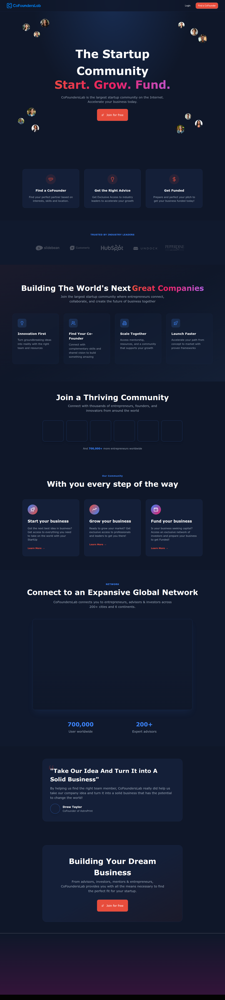
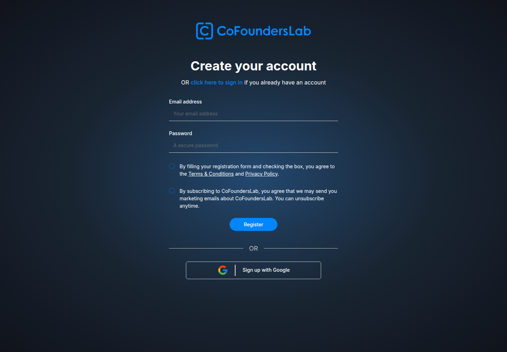
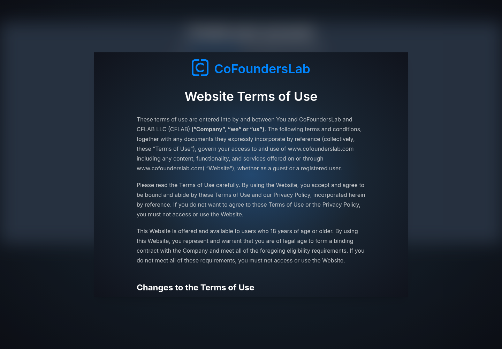
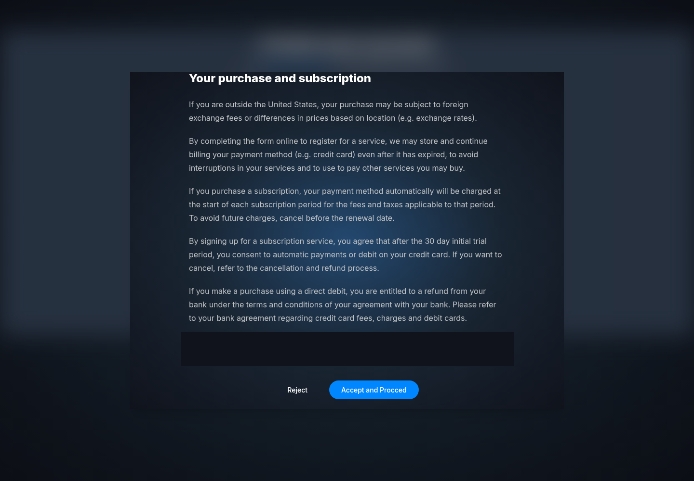

Profile
- Company
- CoFoundersLab
- Url
- https://cofounderslab.com/
- Source Category
- Cofounder-matching platforms
- Research Status
- Deep Cited Research / Draft Complete
- Current Status
- live - confirmed via direct fetch of https://cofounderslab.com/ (HTTP 200, active signup/premium flows, 2026-era testimonials). Operating as an acquired subsidiary; not dead/hijacked/pivoted.
- Founded Launch Year
- Founded 2011 by Alejandro Cremades, Shahab Kaviani, and Tanya Prive (Crunchbase; Forbes contributor bio of Cremades)
- Company Age
- ~15 years (since 2011)
- Hq Country
- US (originally DC/Fort Washington, MD area; Crunchbase also lists Los Angeles, CA post-acquisition)
- Operating Area
- Global - '200+ cities and 6 continents' per own homepage
- Target Users
- Entrepreneurs/founders seeking co-founders, advisors, and investors; broad startup-community membership rather than a narrow niche
- Product Category
- swipe/card matchmaking; cofounder matching; founder-investor / capital; NDA/e-sign; AI
Product Flows
- Swipe Card Interface
- not found / no public source confirming a swipe-card UI in the current product - current homepage describes search/filter-based 'Find a CoFounder' matching, not a swipe mechanic. Original batch-1 'yes' could not be corroborated in this pass; downgraded to unclear.
- Mutual Match
- not found / no public source describing a mutual-accept match step; product appears to be open messaging/search-based rather than a Tinder-style mutual match
- Ai Matching Scoring
- partial - Premium tier advertises 'recommended candidate matches via proprietary algorithm' (cofounderslab.com/premium) but no evidence of deep-learning/AI-labeled scoring; treated as algorithmic, not confirmed AI
- Ai Deck Scoring
- not found / no public source
- Founder To Founder Flow
- yes
- Founder To Investor Flow
- yes - community includes investors/advisors
- Project Profiles
- yes
- Messaging Collaboration
- yes
- Mobile App
- not found / no public source of a current dedicated CoFoundersLab iOS/Android app; a 'Desktop App for Mac, Windows' listing exists on third-party site WebCatalog (unofficial wrapper, not a native mobile app) - insufficient to confirm a first-party mobile app
- Web App
- yes
Security & Documents
- Nda Gated Unlock
- not found / no public source - no NDA feature described on homepage or premium page
- Data Room
- not found / no public source
- E Signature
- not found / no public source
- Meeting Prep Ai Briefing
- not found / no public source
Pricing, Funding & Traction
- Pricing Model
- Freemium: Free tier + Premium at $29/month with a 30-day free trial (cofounderslab.com/premium)
- Business Model
- Subscription (freemium SaaS) plus partner-perk affiliate relationships (HubSpot, Unbounce, Soona, Slidebean discounts listed as premium perks)
- Total Funding
- $680K total raised (Crunchbase), all pre-acquisition
- Funding Rounds
- Seed round closed Jan 9, 2014 (Crunchbase) - last independent funding round found
- Investors
- not found / no named investor list surfaced in this pass beyond aggregate Crunchbase seed total
- Funding Source Type
- VC/angel seed funding (2014), now operates as an acquired subsidiary rather than independently venture-funded
- Last Funding Date
- 2014-01-09 (Crunchbase seed round)
- Users Traction
- 700,000+ users worldwide per current homepage (some third-party sources cite 650,000+); '200+ Expert advisors'; historically cited as '400,000 entrepreneurs' at time of 2018 acquisition, suggesting continued community growth since
- Deals Funding Facilitated
- not found / no public $ total; testimonial cites AstroPrint co-founder match (Drew Taylor) as a named success story but no aggregate funding-facilitated figure
- Partnerships
- Business Rockstars/Invincible Entertainment (owner); partner-perk program with HubSpot, Unbounce, Soona, Slidebean
- Media Coverage
- PRWeb acquisition announcement (2018); Forbes contributor piece by co-founder Alejandro Cremades on lessons from the acquisition (forbes.com/sites/alejandrocremades/2018/04/16); dot.la coverage 'Recently Laid Off? CoFoundersLab Wants To Help You Start Your Own Company'
- Product Update Activity
- Site actively maintained with current-dated testimonials and a functioning premium checkout flow as of this 2026 check; no public changelog found.
- Acquisition Rebrand History
- Acquired by Business Rockstars on April 11, 2018 (PRWeb, Crunchbase acquisition record, blog.cofounderslab.com announcement). Business Rockstars was itself later acquired by Invincible Entertainment Partners for $20M in December 2020 (LA Business Journal) - CoFoundersLab's current corporate parent chain is therefore Invincible Entertainment via Business Rockstars, though the CoFoundersLab brand/site continues operating independently under its own domain.
Scores
- Product Overlap Score
- 4
- Feature Maturity Score
- 3
- Market Traction Score
- 4
- Funding Strength Score
- 1
- Ai Depth Score
- 1
- Nda Security Strength Score
- 1
- Network Moat Score
- 4
- Direct Threat Score
- 2.9
- Source Confidence
- Medium
Evidence Notes
- Primary Sources
- https://cofounderslab.com/
https://cofounderslab.com/premium - Secondary Sources
- https://www.crunchbase.com/organization/cofounderslab
https://www.prweb.com/releases/_business_rockstars_acquires_cofounderslab/prweb15403090.htm
http://blog.cofounderslab.com/cofounderslab-acquired-by-business-rockstars
https://labusinessjournal.com/media/business-rockstars-acquired-invincible-entertainme/
https://www.forbes.com/sites/alejandrocremades/2018/04/16/my-biggest-10-lessons-after-my-startup-got-acquired-for-millions/
https://tracxn.com/d/companies/cofounderslab - Unsupported Claims
- Swipe-card interface and mutual-match mechanics from the batch-1 pass could not be corroborated with current site content and were downgraded to 'not found'; treat with caution until manually verified via account signup.
- Contradictions
- Batch-1 flagged swipe_card_interface as 'yes' but current homepage copy describes a search/filter model, not swiping - flagged as a contradiction requiring manual UI verification (would need a logged-in account to check the actual in-app browse screen).
- Last Checked
- 2026-07-19
- Notes
- Oldest platform in this batch (2011) with the largest claimed user base (700K+) but now operating as an acquired subsidiary of an entertainment-media company rather than a venture-backed product company; feature set (search + premium messaging + investor pitch access) is broad but shallow compared to BizMatch's structured NDA-gated 'Three Paths' model - no evidence of NDA gating, data rooms, or e-signature at all.
Registration Flow
Research date: 2026-07-19. Screenshots are sanitized public copies from the private registration-flow capture set; credentials, tokens, verification links/codes, browser chrome, and private identifiers are not intentionally published.
Outcome: stopped at required truthful-details / submission boundary.
Stop point: Bottom of the Website Terms of Use modal at the Your purchase and subscription section, before any paid-plan, payment-method, subscription, or financial-commitment step
Blocker / boundary: The registration flow reaches a mandatory terms confirmation whose final section contains paid-subscription and automatic-payment language, an explicit stop boundary for this evidence-only capture. In addition, controlled attempts to accept the terms returned to the registration form without dispatching a registration API request or producing a success/verification state, so account creation could not be confirmed.
- Official public homepage. CoFoundersLab's official homepage presents the startup community and offers Login, Find a CoFounder, and Join for free controls. The public positioning covers co-founder matching, advice, growth, and funding.
- Create your account form. Join for free opens the official /register page. The blank form requests an email address and password, requires agreement to the Terms & Conditions and Privacy Policy, presents a separate marketing-email subscription consent, and offers Register or Sign up with Google.
- Website Terms of Use confirmation. Submitting the populated authorized registration form after selecting both displayed consent controls opens a long Website Terms of Use modal. The modal states that users must be at least 18 and provides Reject and Accept and Proceed actions at its end.
- Purchase/subscription language and stop point. The final section of the terms is titled Your purchase and subscription. It describes conditional payment-method storage, recurring subscription charges, and automatic payments after a 30-day trial, immediately before Reject and Accept and Proceed. No payment details were provided and no purchase or subscription was initiated. Accepting the terms during the registration test returned to the same form without any registration API request, success state, or verification prompt.



